面试官皱眉：“你知道Codex多Agent实现机制吗？ ”我笑了：“独立会话、上下文交接、异步通信、任务调度，你想先听哪块？”
来源：微信公众号 归档日期：2026-10-15 抓取状态：成功 原文字符：11895｜配图：29 张
摘要速览
- 大家好，我是小林 用过编程 Agent 的朋友，应该见过这种分工：主 Agent 把调查、测试或审查交给子 Agent，自己继续处理整体任务。 看起来，多 Agent 就是多找几个帮手。 可任务分出去了，背景、消息和结果也得交接清楚。 交接没做好，多开几个 Agent，只会多出几份互相对不上的结论。
核心内容
（待补充）
可执行启发
（待补充）
我的想法
（待补充）
原文沉淀
目录
- 按固定步骤走，可以吗？
- 能不能让一个 Agent 负责分工？
- 直接把任务交给另一位 Agent 呢？
- Codex 更接近哪一种？
- 先决定要交接多少背景
- 继承背景，也要清理父任务的执行过程
- 背景交接了，身份也要重新交代
- 有了历史，还需要认真写任务书吗？
- 消息先去哪儿？
- 补充信息和派新任务，是一回事吗？
- 调查做完，结果还要专门发一遍吗？
- 结果来晚了，会不会把已经结束的任务又拖回来？
- 等待结束，就代表两个调查都完成了吗？
- 任务方向变了，要重新开一批 Agent 吗？
来源：https://mp.weixin.qq.com/s/_EgLSCc4dj0gt-09Uaw7eA 平台：weixin｜作者：小林coding 抓取方式：cdp｜字符数：16543｜图片：29
大家好，我是小林
用过编程 Agent 的朋友，应该见过这种分工：主 Agent 把调查、测试或审查交给子 Agent，自己继续处理整体任务。
看起来，多 Agent 就是多找几个帮手。
可任务分出去了，背景、消息和结果也得交接清楚。
交接没做好，多开几个 Agent，只会多出几份互相对不上的结论。
这次就来图解 Codex 多 Agent 协作，把下面几个问题聊清楚：
• Q1：一个 Agent 已经能干活，为什么还要分工？帮手越多，干活就越快吗？
• Q2：多 Agent 有哪些常见的协作方式，Codex 选择了哪种？
• Q3：派出一个子 Agent，只是调用一次模型，还是让一位帮手独立干活？
• Q4：子 Agent 没参与之前的讨论，怎么知道任务背景和用户改过的要求？
• Q5：大家都在忙，消息什么时候会被读到，结果又怎样传回来？
• Q6：等待结束，就代表子 Agent 已经干完了吗？
• Q7：上下文各自独立，为什么还可能把同一个文件改乱？
依旧万字长文，硬核图解，端好🍵慢慢看。
────
01｜一个 Agent 已经能干活，为什么还要分工？ ────
一个 Agent 修复问题时，往往要先读代码、检查配置，再调查测试失败的原因。修改完成，还要重新验证，检查有没有影响其他功能。
这些动作都合理，但全塞进一条会话，就会遇到两个问题。
一是时间。有些工作互不依赖。比如审查项目时，一位子 Agent 检查测试失败的原因，另一位检查文档中的失效链接，两项工作可以同时推进。
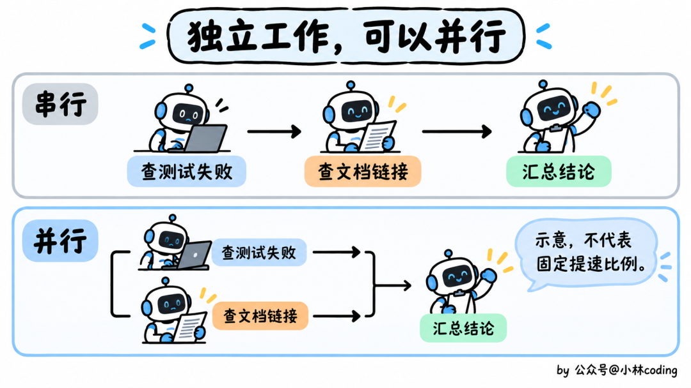
二是上下文。代码、配置、测试日志和几次失败尝试都留在同一条会话里，模型每次继续时，都要面对越来越多的材料。专门调查测试的 Agent，可以让自己的上下文集中在测试问题上。
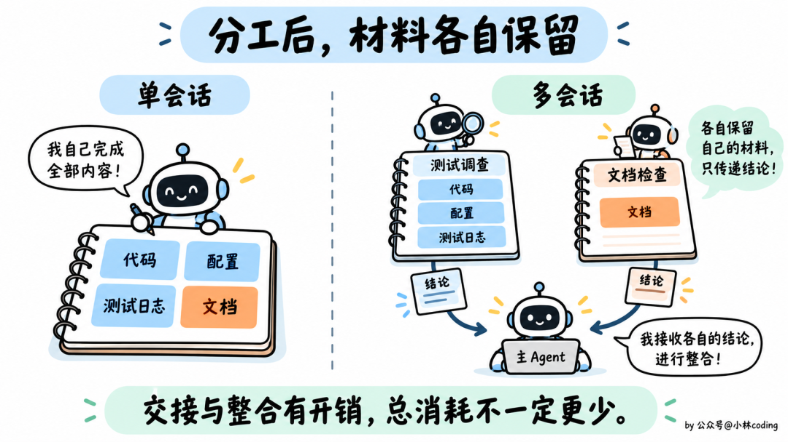
是不是把任务拆得越细，效果就越好？
也不是。主 Agent 派任务要交代背景，子 Agent 要读取材料、请求模型，结果回来后还要整合。原本查一个文件就能解决的问题，拆成三份，交接开销可能比实际工作还大。
而且，有些动作存在依赖。测试为什么失败还没查清，就让另一个 Agent 按猜测修改代码，最后很可能要返工。
这种情况下，可以先派子 Agent 做只读调查，查清原因后再修改，修改后再验证。主 Agent 等待期间，也可以先处理不依赖调查结果的工作。
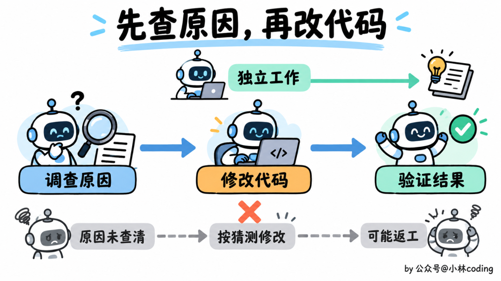
这里有并行，也有先后。拆分时要看任务之间的信息依赖，不能只数用了几个 Agent。
有了分工的理由，接下来要决定的就是：这些 Agent 按什么方式配合？
────
02｜多 Agent 有哪些协作方式，Codex 选择了哪种？ ────
按固定步骤走，可以吗？
最容易想到的办法，是先把流程定好：需求分析 Agent 交给编码 Agent，编码 Agent 再交给测试 Agent。每一步的输入、产出和下一步，都由程序提前安排。
这就是固定工作流。每个 Agent 只负责自己那一步，程序负责把结果交给下一个 Agent。步骤固定下来，出了问题就比较容易找到卡在哪一步，也可以在交接前检查结果是否合格。
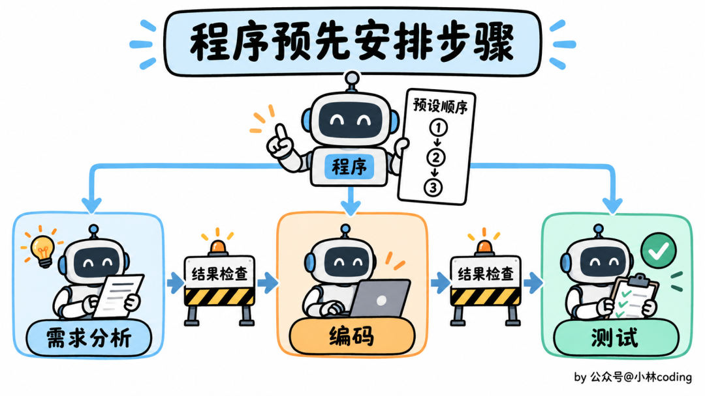
可测试失败以后，需要回去修改，还是先追加一项调查？预设流程得有相应分支，或者由开发者继续补上。流程越稳定，这种方式越合适；任务变化越多，需要提前考虑的分支就越多。
能不能让一个 Agent 负责分工？
可以。保留一个主 Agent，由主 Agent 根据当前任务决定需要什么帮助，派发子任务，再汇总结果。这类方式通常叫主 Agent 调度，或者 Orchestrator-Workers。
主 Agent 可以读完项目再决定怎么分工，需要更多信息，就追加调查；几项工作互不依赖，就同时派出去。用户把需求交给主 Agent，主 Agent 找帮手完成子任务，最后再把结果整理好，交回给用户。
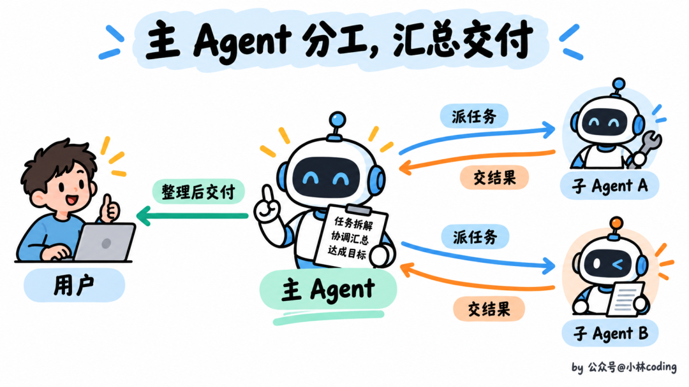
不过，主 Agent 怎么分工就很重要了。任务拆错，几个子 Agent 可能查了同一件事；背景没讲清，回来的几份结果可能拼不到一起。收齐结果后，主 Agent 还得判断哪些结论可信、哪些需要补证据。
直接把任务交给另一位 Agent 呢？
还有一种方式：当前 Agent 判断应该由别人接手，就把处理权交出去。比如客服 Agent 发现用户需要退款，把会话转给退款 Agent，后者继续处理并直接回复用户。
这叫接力交接，也就是 Handoff。前面是主 Agent 找帮手，自己继续负责用户的需求；这里是把会话交给另一位 Agent，由接手的 Agent 继续处理并回复用户。
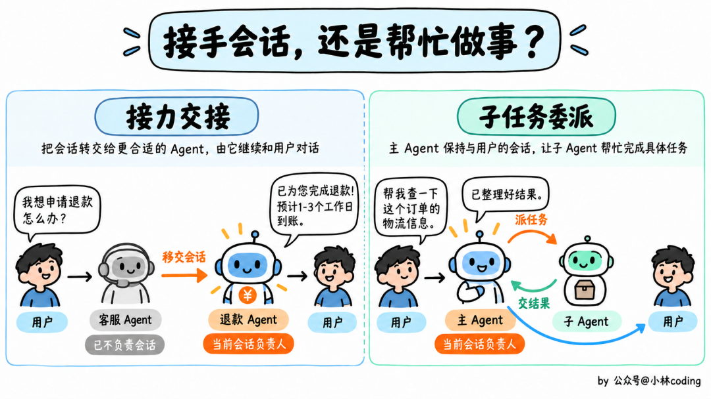
接手者可以集中处理自己的领域，但多次转交时，要把必要背景和未完成事项传清楚。如果任务需要几位 Agent 的结果最后合成一份实现，仍然要安排整合者。
这几种做法可以组合。「一个写、一个审查」描述的是怎么分工，固定工作流和主 Agent 动态调度都能采用，这几种做法并不是只能选一种。
Codex 更接近哪一种？
这套 Codex 实现更接近主 Agent 动态分工，子 Agent 还可以继续找帮手。
接收用户需求、负责整体交付的主 Agent，位于协作关系的最上层，也叫根 Agent。主 Agent 创建 A，主 Agent 就是 A 的父 Agent；如果 A 又创建了 C，A 就是 C 的父 Agent。C 完成任务，结果先交给 A，再由 A 决定怎样利用。
每位子 Agent 都有自己的任务和上下文。这里的父子关系，主要说明谁创建了谁，以及完成结果默认交给谁。
Agent 之间发消息时，不用只找自己的父 Agent。比如 A、B 都由主 Agent 创建，A 也可以直接把新发现告诉 B，不必让主 Agent 转达。
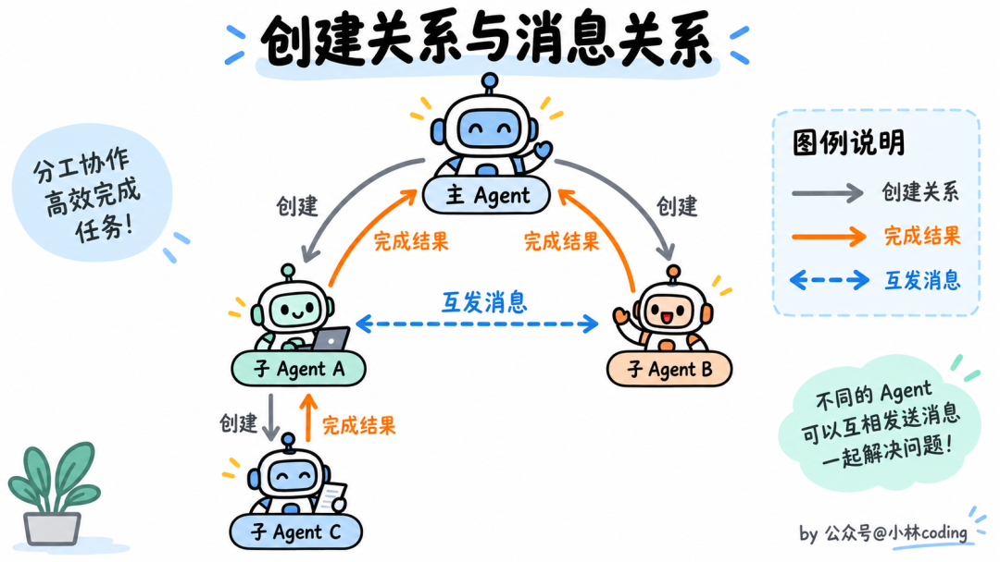
为什么这种结构适合编程任务？
因为编程任务经常要读过项目，才知道哪里需要帮忙。可能原本只想查一个文件，读完却发现还得看另一个模块；也可能改完代码以后，才发现需要补一项测试。主 Agent 可以根据这些新发现调整分工，不必一开始就定好全部步骤。
主 Agent 可以派子任务了，那派出去的子 Agent，在 Codex 里面到底是什么？
────
03｜主 Agent 派出去的，到底是什么？ ────
假设主 Agent 想找一位帮手调查代码，就可以让 Codex 创建子 Agent，再交代调查任务。这里把这位子 Agent 叫作 A。
创建子 Agent，是把任务交给另一次模型请求，让模型回答一段分析就完了吗？
如果是这样，A 想先搜索目录，再读几个文件，最后根据发现继续追查，谁来帮 A 执行这些步骤？
Codex 创建的是一条可以独立干活的会话。
A 有自己的对话历史和运行状态。你可以把会话理解成一份持续保留的工作记录：接过什么要求、读过哪些材料、形成了什么结论，都记录在这里。
收到调查任务后，A 先请求模型判断该查哪里，再调用工具读代码，然后把读取结果交给模型，决定下一步。这个「模型判断 → 工具执行 → 根据结果继续」的过程，就是 Agent 循环。
从开始调查到交回结果，算一轮工作。一轮工作可能包含多次模型请求和工具调用。以后再让 A 审查实现，就是在同一条会话里开始新一轮工作。
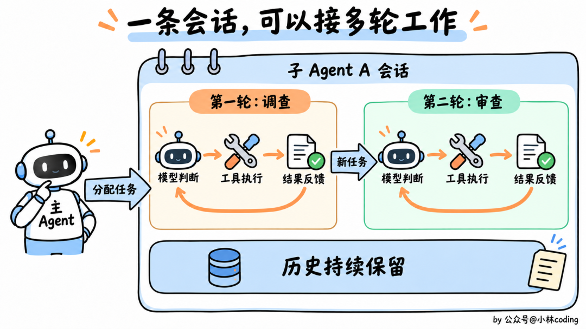
那 Codex 要为子 Agent 再写一套执行引擎吗？
不需要。Codex 复用已有的会话引擎，再通过共享的管理层，把这些独立会话组织起来。
模型根据看到的信息决定下一步做什么，Codex 程序负责执行工具、保存历史、传递消息。这套管理层也由 Codex 程序实现。
管理层负责创建会话、记录父子关系、找到消息接收者，以及协调执行资源。如果主 Agent 再创建一位子 Agent B，主 Agent 和 A、B 各有自己的工作历史，管理层则记录这些会话属于哪个团队。
每位 Agent 在团队里都有自己的名字或编号。发送消息时，管理层根据接收者的名字找到对应会话，把消息送过去。
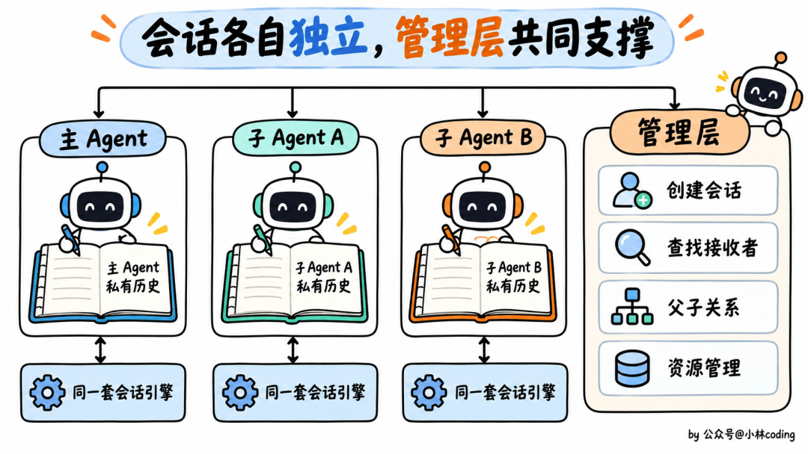
如果 A 确实需要继续拆分任务，A 也可以创建自己的子 Agent。组织关系因此可以形成多层。
注意，这里的「独立」首先指会话。
A 读文件获得的工具结果，不会自动变成 B 的对话历史；主 Agent 后来收到的新要求，也不会靠某个共享上下文自动出现在所有子 Agent 面前。主 Agent 和子 Agent 需要通过任务交接和消息传递同步信息。
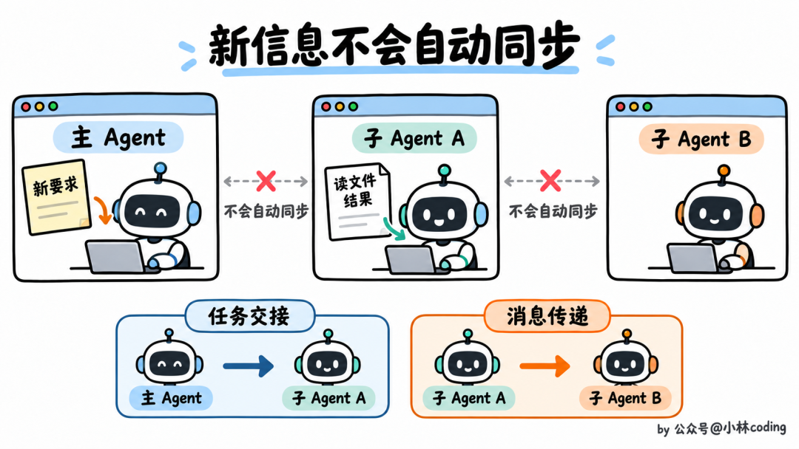
这让每个 Agent 能够集中处理自己的任务，但也带来一个直接的问题：子 Agent 没参加前面的需求讨论，怎样知道用户已经定下哪些要求？
会话创建好了，还要把任务交代清楚。
────
04｜子 Agent 没参与之前的讨论，怎样接得住任务？ ────
比如用户之前说过：给页面加一个按钮，沿用项目现有样式，不要安装新库。
主 Agent 知道这些要求。但如果子 Agent 没有继承前面的讨论，只收到「完成按钮部分」这句话，会怎样？
子 Agent 可能做出一个能用的按钮，却选了新组件库，或者另写一套样式。功能做出来了，用户的约束却漏掉了。
这就是多 Agent 的第一个难点：任务拆开以后，背景信息也被拆开了。
信息给得少，子 Agent 容易漏掉约束，或者重新调查主 Agent 已经弄清的事。信息给得多，又可能把不相关的讨论和执行过程一起塞进去。
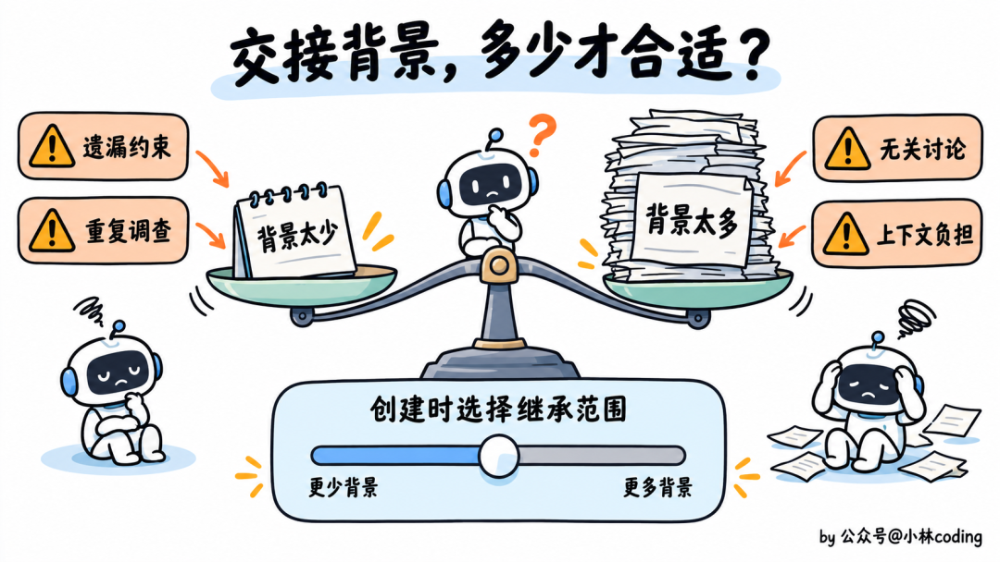
Codex 允许派任务的 Agent 在创建子 Agent 时，选择要继承多少历史。
先决定要交接多少背景
可以选择不继承前面的讨论。子 Agent 从新的历史开始接收任务，仍然会有运行所需的指令和环境，但前面用户怎样讨论需求，需要在派发任务时重新交代。
也可以选择继承父会话的全部可用历史。Codex 会基于这些历史建立子会话，适合任务紧密依赖前文的情况。如果没有专门指定继承范围，Codex 默认采用这种方式。
还有一种折中：只继承最近几轮。例如前面讨论过很多无关功能，最近两轮才确定这次的修改要求，就可以只带上最近两轮的背景。
这里按一轮一轮的工作来计数，不是按消息条数。比如用户先要求调查项目结构，Agent 搜索目录、读十个文件，再给出结论，整个过程是一轮；用户接着要求比较两种修改方案，又开始下一轮。继承最近两轮，就是带上这两段工作的背景，不能理解成最后两条消息。
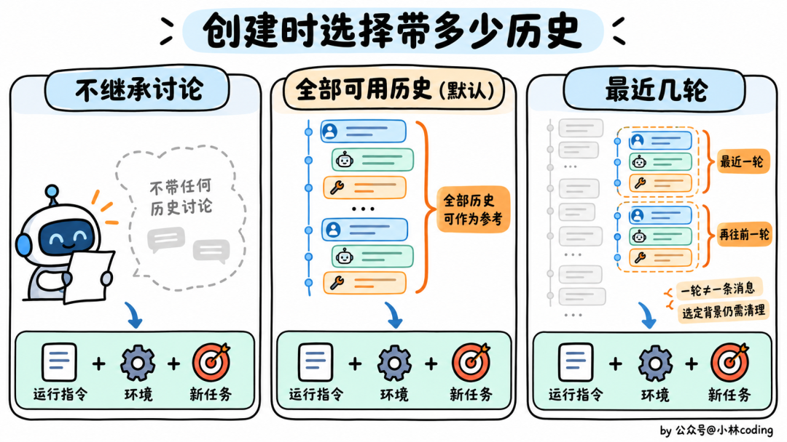
选哪种，要看这次任务需要多少前文。派任务的 Agent 得做这个判断，Codex 负责按选定的范围准备背景。
不过，选择继承全部可用历史，就能把主 Agent 的运行现场原封不动复制过去吗？
还得先清理父任务的执行过程。
主 Agent 的历史里，除了用户需求和已经形成的结论，还有正在执行的工具调用、中间思考、进度汇报和团队通信记录。
假如子 Agent 一启动，就背着主 Agent 那一串未整理的执行过程，子 Agent 可能把父任务正在做的事当成自己的任务，甚至继续沿着父任务的工作步骤往下走。
所以，Codex 会先处理继承材料。
继承背景，也要清理父任务的执行过程
对于常规历史记录，Codex 保留用户消息、必要的指令和助手的最终回答等内容，过滤父任务的推理记录、非最终回答的助手消息，以及常规工具调用和对应结果。
比如主 Agent 之前搜索了一遍项目，产生很多工具记录，最后告诉用户：项目已经有按钮组件，可以直接复用。
对于这些常规历史记录，子 Agent 可以继承需求和已形成的回答，父任务那次搜索的调用过程则会被过滤。
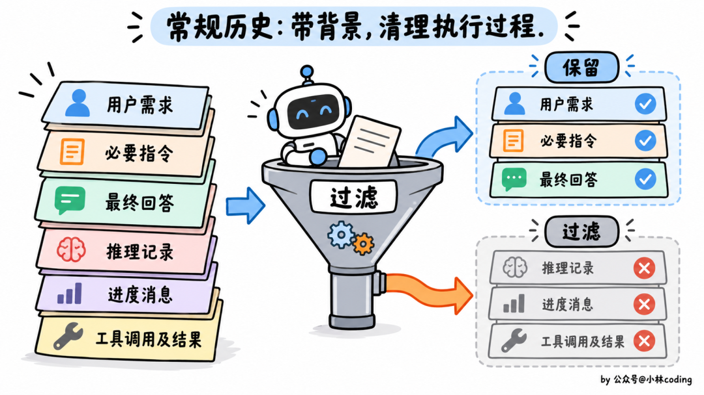
交接的目标，是让子 Agent 理解任务背景，再围绕自己的任务开始行动。
那主 Agent 之前读文件、跑测试得到的事实，会不会全丢了？
不会因为过滤工具调用，就把所有调查结论一起清掉。已经写进最终回答的结论，仍可以作为常规历史的一部分交给子 Agent。
还有一种情况：父会话已经做过压缩。前一篇讲过，历史太长时，Codex 可以通过压缩整理关键事实。比如十次读文件的过程很长，整理后留下的结论可能只有一句：项目已有可复用的按钮组件。
压缩后用于继续工作的那份历史，会保存在恢复点里。创建子 Agent 时，也可能继承这份历史。恢复点有自己的清理规则，除了摘要，还可能包含部分工具记录，不能套用前面常规历史的筛选规则。
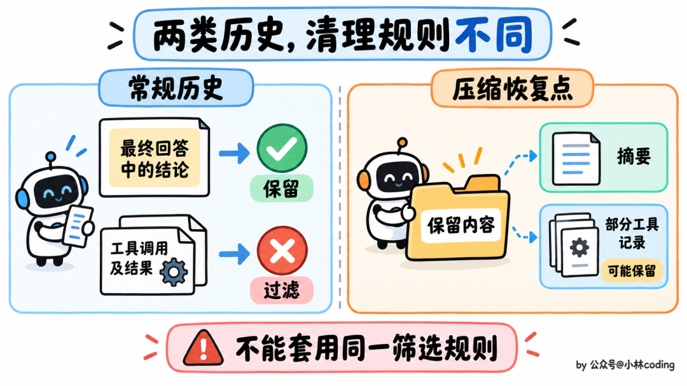
所以，要区分原始工具过程和已经保存下来的背景事实。过滤常规工具调用，并不意味着旧调查得到的事实全部消失。
因此，即使选择继承全部可用历史，子 Agent 拿到的也是经过清理的交接材料，而不是全部原始运行日志。
背景交接了，身份也要重新交代
还有一种容易忽略的信息：主 Agent 原本负责整体交付，子 Agent 却可能只负责检查某个文件。
如果把主 Agent 的团队身份说明也照搬过去，子 Agent 就可能误以为自己还要安排实现、验收和最终答复。
所以，Codex 会清理继承历史里旧的团队身份和协作模式说明，再告诉子 Agent：你是谁、父 Agent 是谁、怎样联系团队成员，以及最终回答会交回父 Agent。
旧会话里已经收发过的团队消息，也不会直接搬进新子 Agent 的消息记录。否则子 Agent 可能把发给主 Agent 的旧要求，当成现在交给自己的新任务。
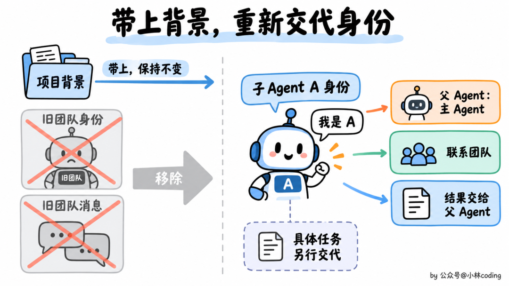
这样，子 Agent 既能带上必要背景，也知道自己负责什么、该和谁联系，不会把父 Agent 的身份一并接过来。
有了历史，还需要认真写任务书吗？
当然需要。
历史解释了这个项目在做什么，却不一定能说明子 Agent 这次应该做到哪一步。
比如你想让子 Agent 帮忙审查代码，只说「检查一下」就太模糊了。可以改成：检查这次修改涉及的文件，重点找遗漏和错误；先只读，不修改文件；返回问题位置、原因，以及需要补充的验证。
这份任务书交代了三个关键点：查什么、能做什么、最后交回什么。
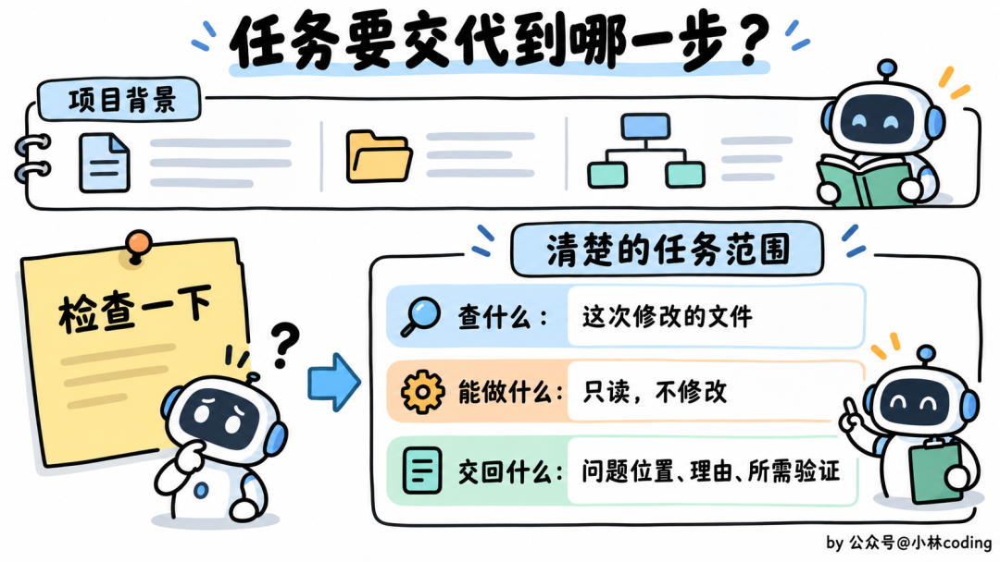
这样，背景负责补足来龙去脉，任务书负责明确目标、范围和交付内容。继承历史可以减少重复解释，却不能替代清楚的分工。
这里的「只读」首先是任务约定。如果需要强制限制写入，还要由执行权限来保证，不能把一句 Prompt 当成沙箱。
背景和任务都交代好了，子 Agent 可以开始工作了。接下来还有一个问题：调查中发现新信息，怎样通知正在忙的其他 Agent？
────
05｜大家都在忙，新信息和执行结果怎样传回来？ ────
举个简单的例子：一位子 Agent 读代码时，发现项目已有一个可复用的工具函数，而主 Agent 正准备另写一份相同功能。
这个发现能等到调查结束再说吗？
最好现在就告诉主 Agent。因为主 Agent 正在准备实现方案，越晚收到，后面返工的范围可能越大。
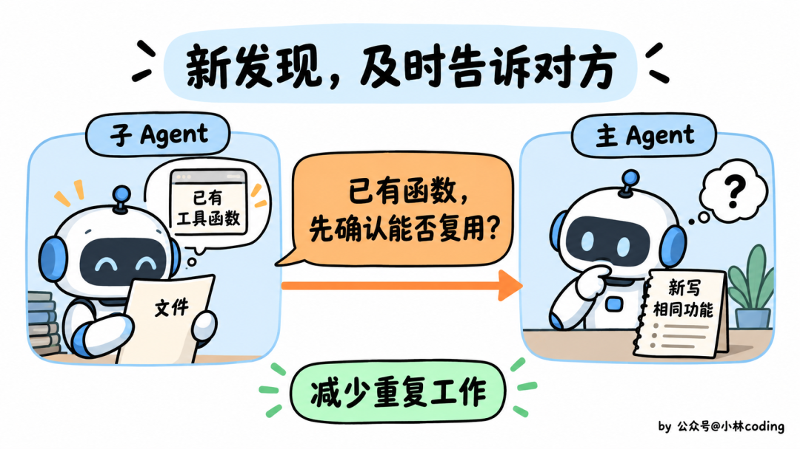
但问题来了，主 Agent 此刻可能正在调用模型，也可能正在等待工具读完项目配置。子 Agent 能把这条消息直接塞进主 Agent 当前这次模型请求里吗？
不能。已经发出去的模型请求，输入已经确定了。收到新消息，也不能凭空改掉对方已经生成的决定。
Codex 的处理方式是：先把消息存下来，等接收方下一次准备模型输入时，再带上新消息。
消息先去哪儿？
每条 Agent 会话都有自己的输入队列。其他 Agent 发来的消息，会先存到这里，等接收方继续工作时，再交给模型处理。下面把这部分暂存消息的队列叫作「待处理消息队列」。
发送的内容会注明谁发来、发给谁，以及具体信息。消息进入主 Agent 的待处理消息队列后，子 Agent 就可以接着调查，不必等主 Agent 当场回答。
比如主 Agent 正在等待文件的读取结果，新消息这时到达，就先存下来。等主 Agent 继续请求模型时，Codex 再把待处理的消息加入输入。模型看到已有工具函数的信息，才有机会判断能否复用。
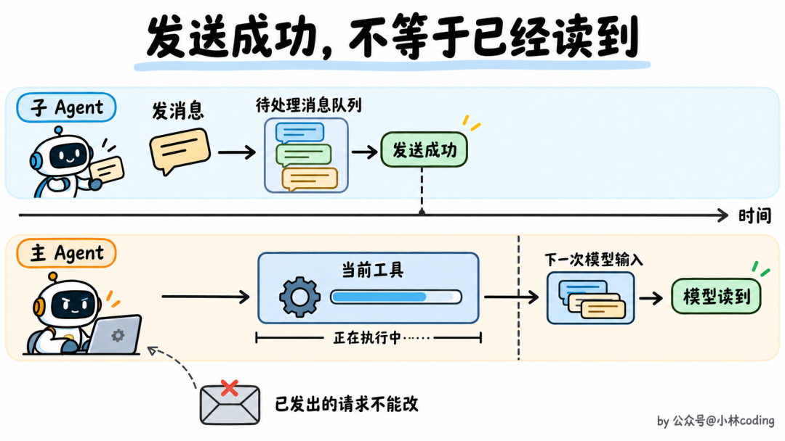
所以「发送成功」只说明 Codex 程序已经接收并投递了消息，不能理解成主 Agent 已经读到消息，并按消息调整了方案。
这就像给同事发消息：发送成功了，不代表同事已经看过，更不代表同事已经照着做了。Agent 之间也需要区分这些状态。
补充信息和派新任务，是一回事吗？
给正在调查的子 Agent 补充一句「还要检查旧配置文件」，用普通消息就够了。
但如果子 Agent 已经交回结果，暂时没有工作，主 Agent 此时说「再帮我审查一下这次修改」，情况就不一样了。
前者是在给正在推进的任务补信息，后者是要让一个空闲 Agent 开始新一轮工作。
Codex 把这两件事拆成「发送消息」和「派发跟进任务」两个动作。发送消息只负责投递信息，派发跟进任务除了投递，还明确要求子 Agent 开始一轮工作。
普通消息通常不会让一个已经空闲的 Agent 立即调用模型。 普通消息会先留在待处理消息队列里，等接收方继续工作时再处理。跟进任务则能让空闲子 Agent 开始处理；如果对方还在工作，新要求也要等到能够接收新输入时，才会交给模型。
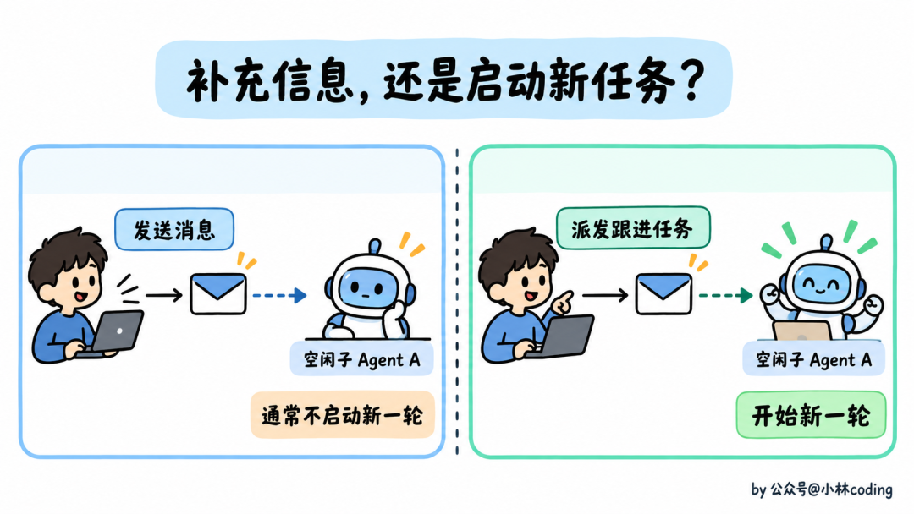
这样就不用让每句补充说明都自动触发一次执行。需要继续干活时，再明确派任务。
调查做完，结果还要专门发一遍吗？
这一步由 Codex 程序自动处理。
子 Agent 完成调查，在最终回答里写出发现和结论。Codex 会把这一轮的完成结果包装成消息，投递给创建这位子 Agent 的父 Agent。
比如子 Agent 查了十几个文件，最后回答「问题出在配置读取顺序」，父 Agent 就会收到这份最终回答。以后再给同一位子 Agent 派任务，完成新一轮工作时，也沿用这个回传机制。
自动回传的是子 Agent 的最终产出，调查过程仍留在子 Agent 自己的会话里。
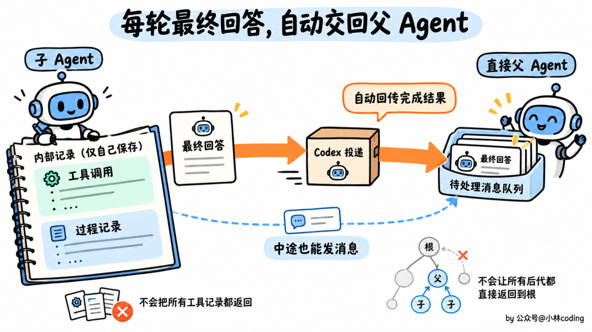
父 Agent 不必把十几个文件的读取过程全部塞进自己的历史，主要接收对后续判断有用的产出。至于结论是否准确、证据是否充分，还得由模型判断，Codex 程序不会自动替父 Agent 验收。
结果来晚了，会不会把已经结束的任务又拖回来？
还有一个容易忽略的情况：主 Agent 已经拿到必要的调查和验证结果，一位子 Agent 还在查补充问题。主 Agent 判断这项补充调查不影响当前交付，先向用户给出最终答复，子 Agent 的消息随后才到。
如果一有子 Agent 消息就强行让主 Agent 再推理一轮，已经交付的任务可能反复延长。尤其几个子 Agent 陆续完成时，用户刚看到一个答案，系统又继续跑起来。
Codex 会区分「还在工作」和「正在结束这一轮」。如果主 Agent 已经进入最终答复的收尾阶段，也没有其他工作需要继续，迟到的普通协作消息就先留在待处理消息队列里。消息不会丢，但也不会仅仅因为消息到了，就让主 Agent 自动再开始一轮。
如果用户又提出新要求，主 Agent 开始下一轮工作，就有机会处理之前暂存的消息。如果当前还没结束，用户追加了要求，或者模型还要继续调用工具，Codex 则会沿着继续工作的流程处理消息。
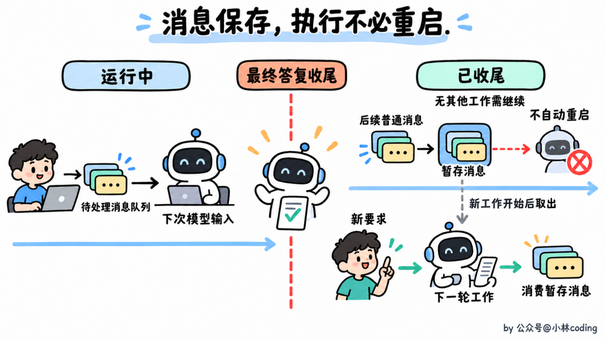
Codex 会保存收到的消息，但不会仅仅因为普通协作消息到了，就自动让已经收尾的主 Agent 再执行一轮。
────
06｜等结果时，怎样避免不停催，又能调整任务？ ────
消息可以先存下来，但主 Agent 怎么知道现在有新消息需要处理呢？
假设主 Agent 正在等两位子 Agent A、B 的调查结果。最容易想到的办法，是隔几秒检查一次 A、B 有没有完成。但每次都让模型发起检查，会多出一串工具调用，还可能在没有新信息时反复推理。
Codex 提供了等待消息的工具。主 Agent 手头还有独立工作，就继续做；做到必须依赖调查结果的地方，再进入等待。
主 Agent 调用等待工具后，Codex 程序负责监听是否有新的协作消息或用户输入。有协作消息到达，就结束等待；有新的用户输入，也能打断等待；到了设定时限，则返回超时。
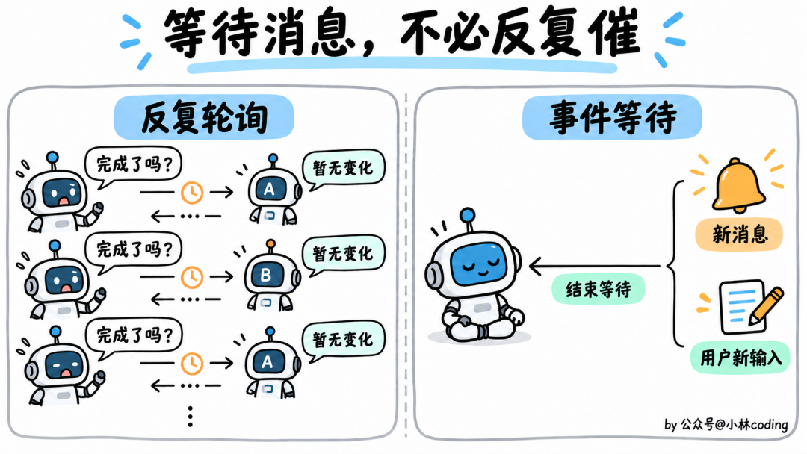
主 Agent 不用每隔几秒请求模型，让模型决定要不要再查一次。等待工具会一直等到有新活动，或者超时。
等待结束，就代表两个调查都完成了吗？
不代表。
这里的等待不是「等 A、B 都完成再返回」，而是等主 Agent 这边有消息或新输入需要处理。
比如 A 发来一句「找到一个线索，还在核对」，就会结束等待，即使 A 的调查还没完成。B 交回最终结果会结束等待，用户临时补一句「先不要修改文件」，同样能打断等待。
等待工具主要报告为什么结束等待，不会直接交回 A、B 的完整调查报告。报告和其他消息会由 Codex 作为新输入交给模型。主 Agent 读过以后，才知道是谁发来了什么，以及下一步能不能推进。
另外，等待超时只是主 Agent 这次停止等待，子 Agent 仍然可以继续工作，并不会被顺手取消。
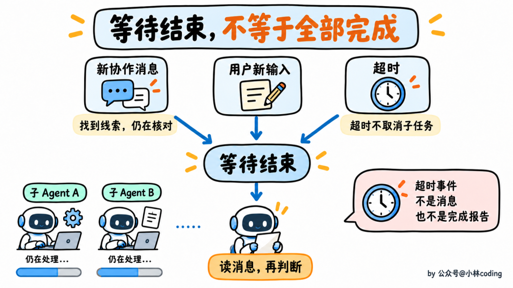
所以醒过来之后，要判断任务依赖有没有满足。如果只有 A 的中间发现，主 Agent 可以先调整设计，之后再等 B；如果两份结果已经齐了，就继续实现。
任务方向变了，要重新开一批 Agent 吗？
也不用。
如果 A 的调查方向已经不需要了，主 Agent 可以让 Codex 中断 A 当前的工作。中断结束的是这轮执行，子 Agent 的会话和已有历史还在，之前已经写入文件的改动也不会因此自动回滚。
比如一位子 Agent 已经读过某个模块，完成了结构调查。主 Agent 改完这个模块以后，可以再请同一位子 Agent 审查。已有调查记录留在会话里，不必换一个新 Agent 重新读一遍。
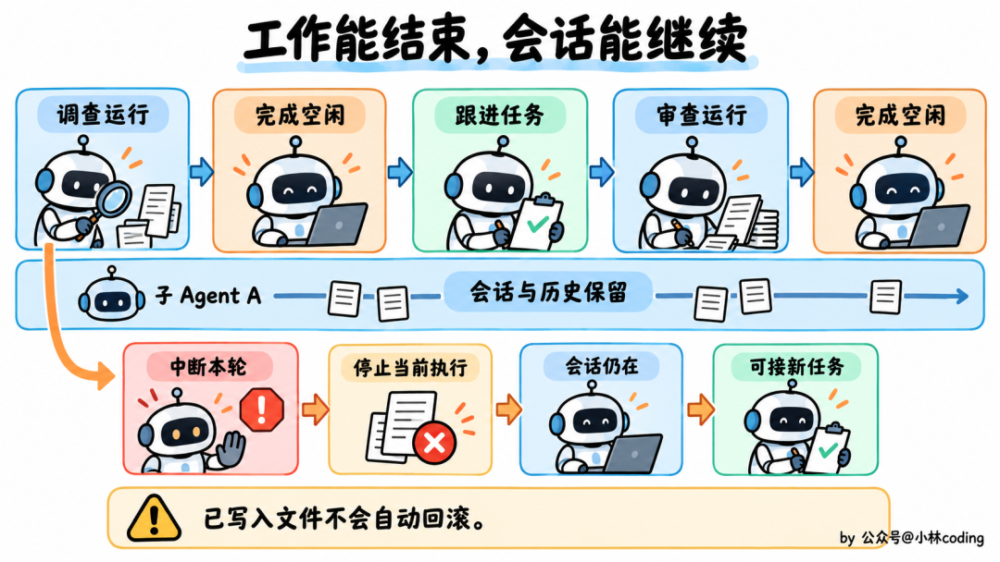
这就形成了一个可以反复使用的工作单元：接任务、执行、交回结果、空闲，再接下一项任务。比起每次都创建新会话，复用能保留已有调查背景，但新的任务目标和范围仍要交代清楚。
那 Agent 会不会越建越多，一直占着资源？
这里要管两种资源。
第一种，是同时有多少 Agent 正在干活。开始新工作前，Codex 会检查执行容量；达到上限时，新的启动请求可能被拒绝，不能无限增加正在执行的任务。
第二种，是有多少会话还加载在内存里。A 即使暂时不干活，会话也可能仍然占着空间，这叫会话驻留。空间不足时，Codex 可以先保存符合条件的空闲子会话，再从内存里卸载。以后需要 A 继续干活，还能按原来的身份恢复会话和历史。
但正在执行、还有未处理消息的会话，不能为了腾位置就直接卸载。如果没有符合条件的空闲会话，也不能强行挤出空间。
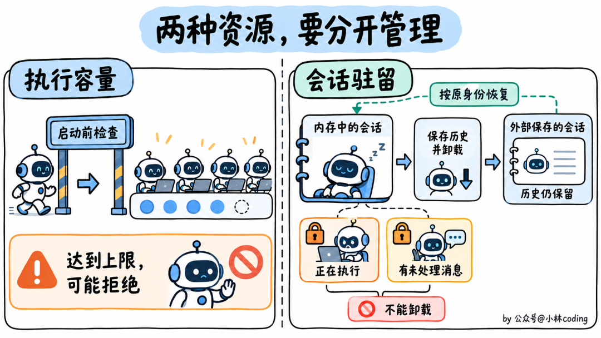
一轮任务做完，不代表这个 Agent 的工作记录就要删除；保存了工作记录，也不代表会话必须一直留在内存里。 把这两件事分开，才能既复用调查背景，又控制资源占用。
────
07｜Agent 多了，怎样避免越帮越忙？ ────
多个 Agent 能独立工作，也能互相传消息了。是不是让 A、B 一起改代码，任务就一定更快？
还差一个最现实的问题：文件。
子 Agent 拥有独立的会话上下文，默认协作环境里的工作目录和文件系统却是共享的。
比如 A 改页面标题，B 改同一页面的页脚。如果双方都先读了旧版本，再按各自的修改覆盖整份文件，B 后写入时就可能把 A 的新标题覆盖掉。各自的模型历史再独立，也挡不住文件层面的冲突。
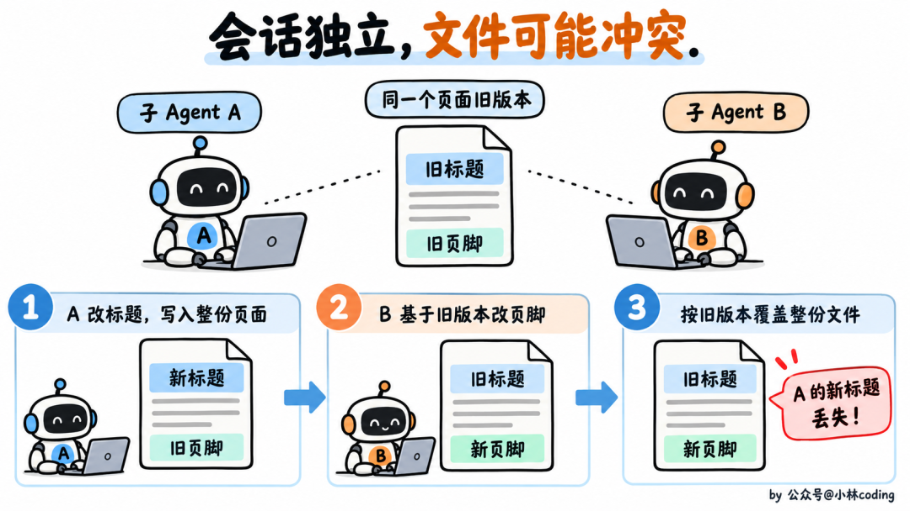
一种办法是让子 Agent 先做只读调查，由主 Agent 统一修改。需要并行修改时，也得明确谁负责哪个范围，哪些文件只能由一个 Agent 整合。
那么，Codex 能不能自己安排好所有职责，保证不会重复劳动？
Codex 提供了创建子 Agent、派任务和传消息的能力，但「任务拆成什么」「由谁负责」「两份结论冲突时信谁」，仍然需要模型结合目标、指令和新信息判断。
比如一位子 Agent 报告「测试通过了」，主 Agent 仍要看这次跑了哪些测试，有没有覆盖修改涉及的行为。只验证正常输入，却漏了空输入或错误输入，任务仍然可能有遗漏。
两份审查结论发生冲突时，也要回到对应代码和验证结果，判断哪份结论更可靠。消息已经送达，并不能替代这一步判断。
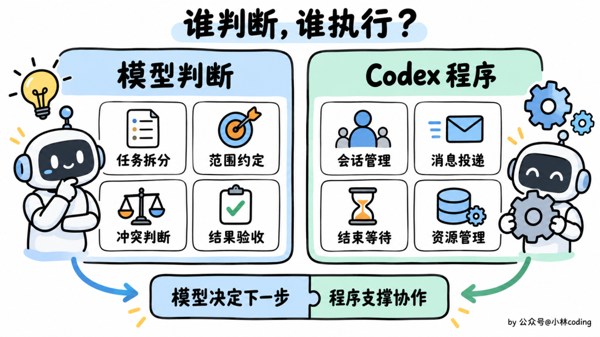
消息回传解决信息怎样送达，结论是否正确还要结合当前代码和验证结果判断。
多 Agent 的收益，来自任务能否独立推进、交接信息是否有用、最终整合是否到位。任务本身很小，或者几个步骤紧密依赖，一条会话直接完成可能更省事。值得借鉴的是这套协作机制，以及怎样明确各个 Agent 的职责。
────
最后 ────
多 Agent 协作要协调的是多条独立工作的会话。
每条会话都有自己的历史和执行状态，又需要与其他会话交换信息。只提供一个创建子 Agent 的入口，还不足以让团队持续配合。
如果你自己开发多 Agent，这里有四个值得借鉴的设计。
第一，子 Agent 要能连续调查，而不只是回答一次问题。Codex 复用同一套 Agent 引擎，为每位参与者保存独立的上下文和运行状态。
第二，任务分出去了，背景不能断。交接时要同时准备必要背景和具体任务，还要清理父 Agent 的旧身份和执行信息，避免子 Agent 接错职责。
第三，各个 Agent 的进度不同，消息不能要求对方当场处理。用待处理消息队列暂存信息，有新消息时结束等待，再区分补充信息、派新任务和交回结果。
第四，任务会结束，协作可能还要继续。把一轮工作的结束与会话的保留分开，Agent 才能继续接任务，空闲时也能释放内存。
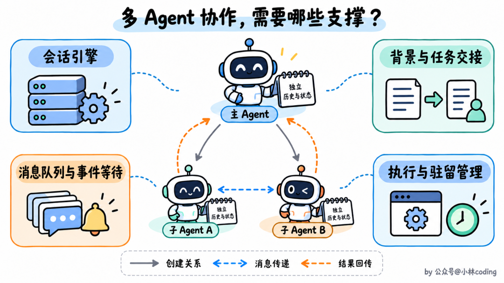
Codex 程序负责让这些交接和协调动作可靠运行。分工是否合理、子 Agent 的结论是否正确，仍要靠模型结合任务要求、当前证据和验证来判断。
学习这套设计时，可以问问自己的 Agent：分工后会不会丢背景？消息来了能不能接住？任务结束后还能不能继续协作？这些问题，就是多 Agent 除了模型推理之外，需要补上的工程支持。
《图解Codex》系列：
归属：[[02-输入/按主题/AI与效率/_index|AI与效率]]